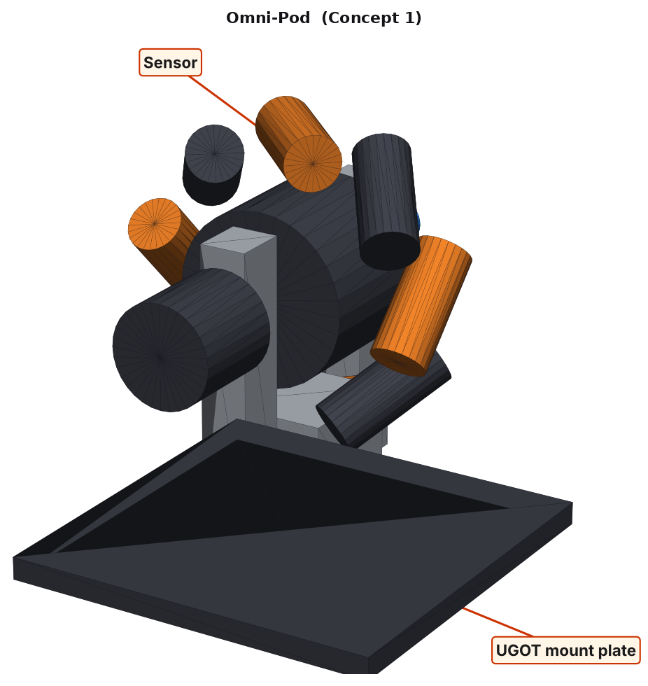
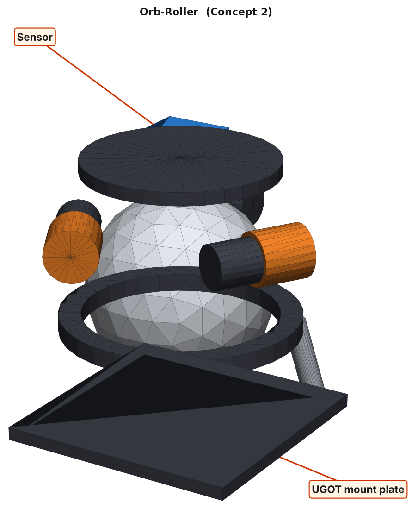
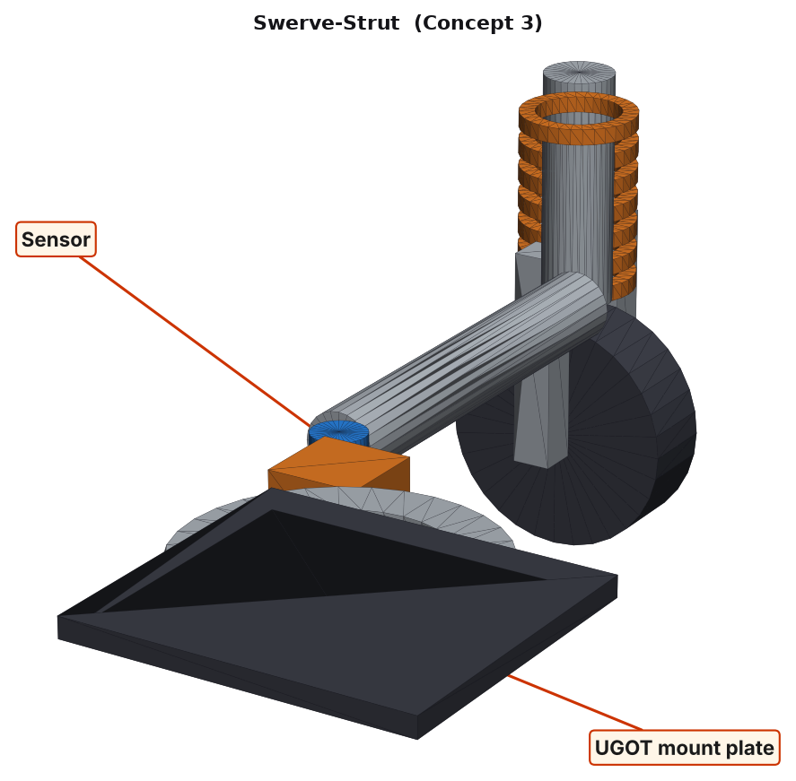
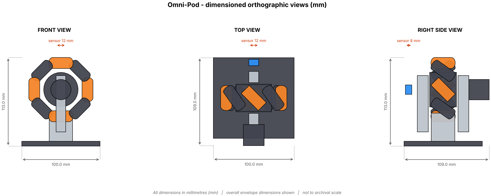
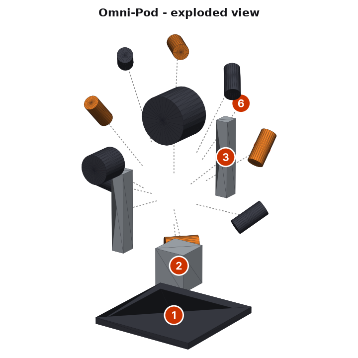
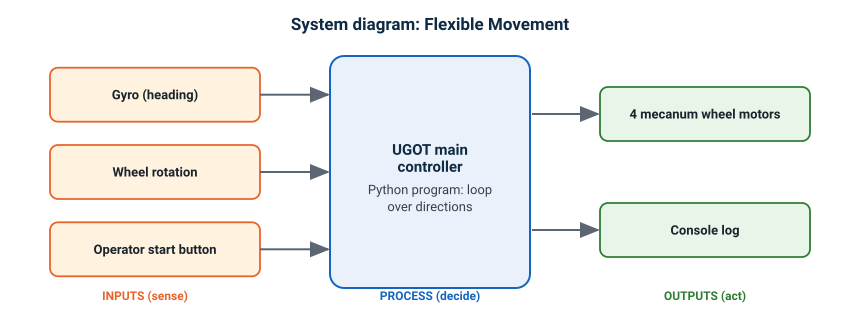
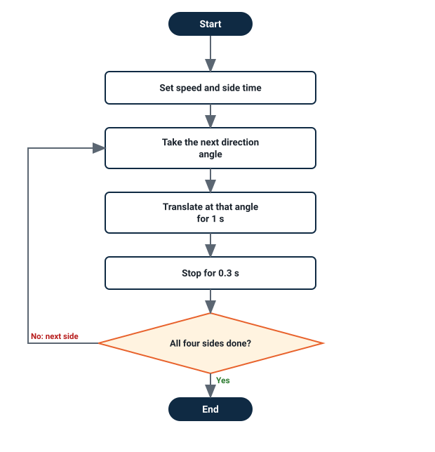
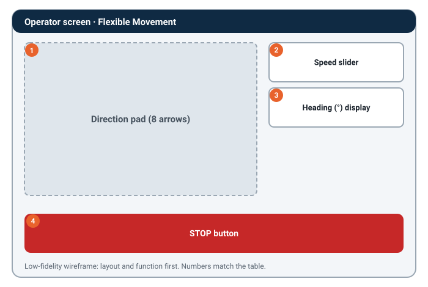
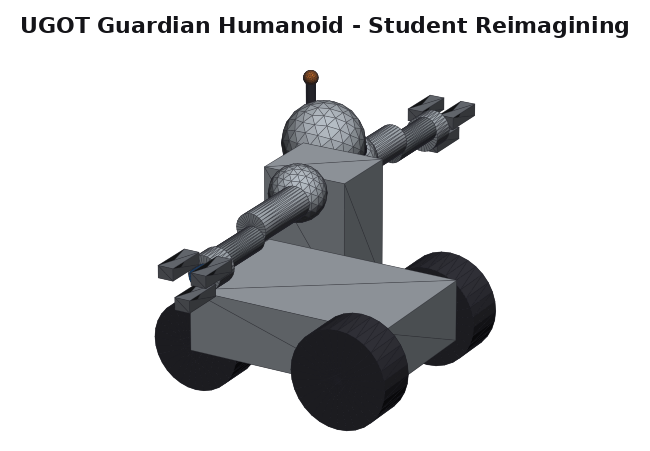

Design Brief
Context that frames the whole Criterion B response for this lesson.
Problem context (real world & UAE link): Inside a crowded shopping mall or hospital corridor a service robot must slide sideways around trolleys and people without turning. Omnidirectional wheels let it move in any direction.
Design task: Design a Python-controlled solution on the ready UGOT kit robot that uses the UGOT Mecanum / omni wheels + encoders + gyro. It must be programmable, testable and demonstrable by a Grade 10 student in this unit. This is a Digital Design unit: there is no 3D printing or laser cutting.
User: a 14–16 year-old MYP student building, coding, testing and demonstrating the robot in class and at the AIA STEM showcase.
B1 · Design Specification
Each success criterion is described and justified using ACCESSFM. Rows marked are measurable. Size and mass are digital design figures from the CAD model: nothing is printed or cut.
| Specification | # | Success criterion | Justification |
|---|---|---|---|
| Aesthetics | 1.1 | Colour scheme of white shell with electric-blue accents. | A high-visibility, consistent palette makes the tool instantly recognisable and looks professional at the AIA STEM showcase. From research: Ag |
| 1.2 | Smooth, rounded external edges (fillet ≥ 2 mm) with no visible fasteners on the outer shell. | Rounded edges read as safe to handle and avoid snagging. From research: Ag | |
| Cost | 2.1 | Estimated cost of added parts and test props per robot ≤ AED 70 (kit parts are already owned). | The school already owns the UGOT kit, so only small extras such as card, tape and printed test cards count; keeps a class set affordable. From research: Ae |
| 2.2 | Re-uses UGOT kit servos, sensors and fasteners; no proprietary parts. | Avoids extra purchase orders and keeps the design compatible with kits the school already owns. | |
| Customer | 3.1 | Mounts on the UGOT robot using only the kit's own fixings and hand tools (check hole spacing against your own kit). | Every group's UGOT kit must be able to accept the part. |
| 3.2 | Assembles in one lesson (≤ 70 min) by a pair of Grade 10 students. | Matches the AIA single-period lesson structure for this unit. From research: Ae | |
| Environment | 4.1 | At least 80% of any added material is reused card, paper or kit parts; nothing new is printed or cut. | Reused card and the kit's own parts follow the 6 R's (Reduce, Reuse) and need no fabrication machines. |
| 4.2 | Added mass on the UGOT robot ≤ 100 g. | Lower mass puts less load on the UGOT motors and battery. | |
| Size | 5.1 | Overall envelope ≤ 110 × 120 × 130 mm (L × W × H). | Keeps the module compact enough to mount on the UGOT chassis without hitting its wheels or the floor. From research: Aa |
| 5.2 | The robot and its test course fit on one standard classroom table (about 1.2 m × 0.8 m). | The unit is tested at a normal desk in a single lesson, with no workshop machines. | |
| Safety | 6.1 | Rollers are shielded so fingers cannot be drawn into the wheel. | Reduces the chance of injury to the student building, testing and demonstrating it. From research: Ad, Af |
| 6.2 | No exposed sharp corners: all edges filleted or sanded; sensor lens recessed about 2 mm to avoid impact cracks. | Standard safe-handling requirement for a student-built robotic part. From research: Af | |
| Function | 7.1 | Drives sideways (strafes) at least 0.2 m/s with less than 5° heading drift. | Directly measures whether the design solves the problem in the scenario above. From research: Aa, Ac |
| 7.2 | Wheel encoder reads rotation so the robot can travel a set distance within ±10 mm. | Sensor range figures are design targets; the housing must never block or shorten them. From research: Ab, Ad | |
| 7.3 | The sensor's field of view is unobstructed by any part of the housing. | A sensor that is blocked gives wrong data, so the design fails its main job. | |
| 7.4 | Sensors and servos are replaceable with hand tools in under 2 minutes. | Classroom robots are reused across cohorts, so parts will wear and break. From research: Ac | |
| Material | 8.1 | Uses only parts from the UGOT kit, plus recycled card for test props. | Kit parts are reliable and already paid for; recycled card is free and quick to change. From research: Ab |
| 8.2 | Flat test props (cards, signs, tags) are printed on paper or card, not 3D-printed or laser-cut. | Paper props take minutes, can be changed after every test and need no workshop machines. |
🧩 Your turn — write your own B1
All: write 2 success criteria (one Aesthetics, one Safety) for your design.
Most: make at least one measurable (a number and a unit).
Some: justify it with a research reference (a spec sheet, a standard or a real product).
B2 · Design Ideas 3 different ideas
Three ideas that differ in mechanism and form, not just looks. Each sketch is an isometric render of the 3D CAD model with the sensor and mount labelled.

Concept 1 — “Omni-Pod” SELECTED
A drop-in wheel pod with eight angled rollers and an encoder. Four of them let the robot move in any direction without turning.
Envelope 100.0 × 109.0 × 113.0 mm · ≈ 45 g · ≈ AED 25

Concept 2 — “Orb-Roller”
A single ball sits on three motor rollers so it can roll any way, like a computer trackball. Beautiful, but harder to build and to keep clean.
Envelope 124.9 × 123.9 × 137.0 mm · ≈ 171 g · ≈ AED 45

Concept 3 — “Swerve-Strut”
A wheel on a steering servo turns to any angle. Simple to understand, but each wheel needs its own steering motor.
Envelope 100.0 × 177.0 × 124.0 mm · ≈ 56 g · ≈ AED 26
🧩 Your turn — sketch a 4th idea
All: describe a 4th idea in 2–3 sentences. It must differ by mechanism, not just colour or shape.
Most: say which ACCESSFM criteria it would score best and worst on.
Some: describe it so well that a partner could draw it from your words alone.
B3 · Chosen Design
Each idea is rated 1 (poor) – 5 (excellent) against every ACCESSFM success criterion from B1.
| Category | What is being evaluated | Concept 1 Omni-Pod | Concept 2 Orb-Roller | Concept 3 Swerve-Strut |
|---|---|---|---|---|
| Aesthetics | High-visibility, rounded, safe-looking shell | 5 | 5 | 3 |
| Cost | ≤ AED 60, reuses kit parts | 3 | 2 | 3 |
| Customer | Fits the UGOT mount, builds in one lesson | 4 | 2 | 3 |
| Environment | Reused or recyclable material, light | 4 | 3 | 3 |
| Size | Fits ≤ 110×120×130 mm | 5 | 3 | 3 |
| Safety | No pinch points or sharp edges | 4 | 3 | 4 |
| Function | Meets the measurable function targets | 5 | 4 | 3 |
| Material | Kit parts and card used sensibly | 4 | 3 | 4 |
| Total (/40) | 34 | 25 | 26 | |
🧩 Your turn — rate and justify
All: pick one rating you disagree with, give your own 1–5 and say why.
Most: re-total the scores. Does the chosen design still win?
Some: write a 3-sentence justification in the style above for your three ideas.
B4 · Detailed Plans
Detailed plans for the chosen design. Part 1 shows the form: dimensioned CAD views (a digital design, nothing is fabricated). Part 2 shows the function: how the robot is connected, how the Python program decides, what the operator sees, and the data the program uses. Someone else should be able to build and code the solution from these plans.
Part 1 · The form (CAD)


Part 2 · The function
1. System diagram

2. Flowchart of the program

Safety by design (B1 Safety): the program has a STOP button on the operator screen and fails safe: when a sensor reading is missing or unclear it stops, and it never keeps driving without a valid reading.
3. Wireframe of the operator screen

| # | Element | What it does |
|---|---|---|
| 1 | Direction pad (8 arrows) | The main view. Shows live data from the robot so the operator can see what the program sees. |
| 2 | Speed slider | Lets the operator set a value (for example an angle or a threshold). |
| 3 | Heading (°) display | Shows a number from the program so the operator can check it against the test pass mark. |
| 4 | STOP button | Stops the robot at once. Always visible and the biggest button. |
4. Pseudocode
SET SPEED = 30 FOR each angle IN [0, 90, 180, -90] TRANSLATE at angle for 1 s STOP for 0.3 s END FOR PRINT final heading
Pseudocode is plain English with the structure of the code. It must match the flowchart step for step.
5. Data and functions the program uses
| Name | Type | Value | Purpose |
|---|---|---|---|
SPEED | constant | 30 | Two named numbers: speed and the time for each side. You tune them after testing. |
SIDE_TIME | constant | 1.0 | Two named numbers: speed and the time for each side. You tune them after testing. |
DIRECTIONS | constant | [0, 90, 180, -90] | A list of travel angles. 0° is forward, and the car can translate left or right up to 180°. |
| Function | What it does |
|---|---|
translate() | Moves the mecanum car in that direction without turning the body. |
stop() | A short pause so the wheels settle and the next move starts cleanly. |
Function names are planning names that follow the uCode block names. Replace them with the real UGOT Python functions when you code. Sensor facts from the UGOT lesson slides: TOF range 4–200 cm (0 under 4 cm, 200 above 200 cm).
🧩 Your turn — plan the function of your own idea
All: draw a flowchart with START, END, three process steps and one decision.
Most: add a wireframe of one operator screen with at least 4 labelled elements, and write the pseudocode to match your flowchart.
Some: add a data table (name, type, value, purpose) and a system diagram for your program.
Integration with UGOT
How the chosen design sits on the UGOT robot (a digital CAD reference), plus the humanoid reimagining.


UGOT Base Chassis
A simplified chassis (body, 4 wheels, camera, controller) so you can check how your design sits on the robot before you code.

UGOT Guardian Humanoid
The wheeled base keeps its mobility while the top half becomes a torso, head and arms. Your Criterion B design can be reinterpreted the same way.
🧩 Your turn — Humanoid challenge
Give the humanoid mecanum 'feet'. How would its upper body lean when strafing quickly?
All: describe one change to the humanoid for this lesson.
Most: sketch in words a second humanoid concept with a different silhouette.
Some: justify it against at least 4 ACCESSFM categories.
🛠️ CAD model: video, steps and downloads
Build the chosen design in Tinkercad. Watch the video, follow the steps, then download the STL files and the views. This is digital CAD only: nothing is 3D printed or laser cut.
1 · Tinkercad tutorial video
2 · Steps for making the CAD model
The picture-by-picture guide has the exact numbers for every shape, a tick box for each step and a skills quiz (scores are saved to the class sheet).
- Mounting plate
- Pod column
- Fork arm ×2
- Wheel hub
- Drive gear motor
- Wheel encoder
- Mecanum roller ×8
- Compare with the teacher's model
- Capture the three views
- Add the dimensions
- Save and export
3 · STL files
Open tinkercad.com → Create new 3D design → Import → choose the .stl → units mm. Measure, recolour or combine it, then Export when you finish.
4 · Views (click to download)


 Integration viewOn the UGOT robot · PNG download
Integration viewOn the UGOT robot · PNG download⬇ Download everything for this lesson (.zip)All STL files, all views, and the steps list
Build and test the robot
No 3D printing or laser cutting. Use the ready UGOT kit, write the program in Python and test it against your B1 specification.
- Check the kit: UGOT mecanum wheel car, laptop, tape, tape measure. Tell your teacher about any missing part now.
- Confirm your B3 design: the kit parts stand in for the “Omni-Pod” sketch (eight-roller mecanum module). The part you design is the program.
- Assemble with the kit's own instructions, then photograph the finished robot.
- Connect the laptop to the UGOT and run a short program: drive forward 1 second then strafe left 1 second.
- Function-test against the B1 function criteria: Drives sideways (strafes) at least 0.2 m/s with less than 5° heading drift. Record results in your portfolio.
- Carry on to Criterion C to plan, code, log and justify your changes.
Quiz — Flexible Movement
Kahoot-style, timed, auto-marked. Your score is saved once you log in above.
🏁 Ready to play?
10 questions · 15 seconds each · lesson content + Criterion B skills.
Reflection prompts
- Which ACCESSFM category was hardest to satisfy with all three of your ideas, and why?
- How did sensor range, reach or print time change once you saw the dimensioned drawings?
- Where might your chosen design still fail Safety in real use, and how would you test for it?